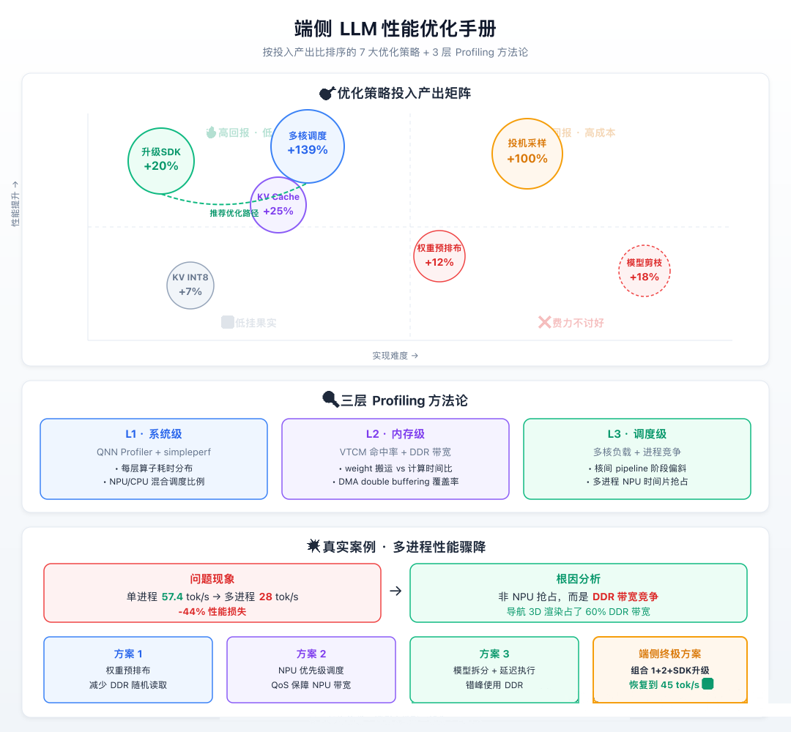

⚡ Profiling 三板斧 · Memory-Bound 破局 · 投机采样加速
前两篇聊了硬件架构和量化方法。到这一步，你应该已经有了一个量化好的模型，能在车机 NPU 上跑起来了。Qwen2.5-VL-3B 在 SA8397P 多核上实测 73 tok/s。这个速度已经可以用了。但够吗？
如果你的目标是「能用」，73 tok/s 够了。如果你的目标是「丝滑到用户忘记这是端侧推理」，得到 100 tok/s。差距是 27 tok/s。看起来不大，但从 73 提到 100 的难度，比从 0 提到 73 还大。因为前面 73 是「粗优化」的结果，靠的是硬件升级 + 量化压缩。后面的 27 是「精优化」，靠的是 Profiling 驱动的逐层调优。
就像田径运动员，从 12 秒跑到 11 秒可能只需要正常训练半年，但从 10.5 秒到 10.3 秒，得用运动科学精确分析每一步的蹬地角度、摆臂频率、空气阻力。

先对齐一下概念。Profiling 就是给模型推理过程「拍 X 光片」。你跑一次推理，Profiling 工具会记录每一层、每一个算子花了多少时间、用了多少内存、数据搬运了多少次。然后给你一张详细到每微秒的时间线图。
就像医院体检，你不能说「我感觉哪里不舒服」然后医生就开药了。得先验血、拍片、做 CT，精确定位病灶，然后才能对症治疗。端侧 AI 的性能调优也一样。不做 Profiling 就开始「优化」，大概率是在浪费时间。
你想想看，很多团队的「优化」是这样的，感觉 Softmax 慢就去优化 Softmax，感觉 DMA 有问题就去改 DMA 策略。结果呢？花了两周优化 Softmax，它只占推理时间的 10%，全优化掉也就快 10%。而真正的瓶颈 DMA 搬运占了 24%，根本没人碰。这就是「凭感觉优化」的代价。
🏥 实际 Profiling 案例分享
一个在 8295P 上遇到的真实问题。在测试中发现一个诡异的现象，同一个量化模型（Qwen2-0.5B W4A16，单进程 57.4 tok/s），在车载系统的多进程环境下（同时有导航、音乐、语音在跑）速度骤降到 28 tok/s。将近一半的性能，没了。
直觉反应是「多进程抢 NPU 资源」。Profiling 结果出来了，NPU 利用率其实只有 35%。不是 NPU 忙不过来，是 L2 Cache 被其他进程刷掉了。车载系统里，导航渲染要用 GPU，GPU 和 NPU 共享 L2 Cache。每次导航更新地图，GPU 的 texture 数据把 NPU 的权重数据从 L2 里挤出去了。NPU 下次推理的时候，权重得从 DDR 重新加载，延迟翻 5 倍。
解决方案是在 HTP 配置中启用 cache partitioning，给 NPU 预留一部分 L2 Cache 不被 GPU 挤占。
{
"htp_config": {
"l2_cache_policy": "partitioned",
"npu_cache_reservation_mb": 2
}
}加了这两行配置，多进程环境下的推理速度从 28 tok/s 恢复到 46 tok/s。注意，没有恢复到 50 tok/s。因为 L2 Cache 总共就那么大，分一部分给 NPU 独占，GPU 那边的渲染也会稍微受影响。这就是 trade-off。端侧系统永远是在共享资源池里做平衡。
💡 这个案例完美诠释了为什么必须在真实系统环境下做 Profiling，而不是在隔离的 benchmark 模式下。隔离模式永远测不出进程间的资源竞争。
🛠️ QNN Profiling 三板斧
高通 QNN SDK 提供了一整套 Profiling 工具。核心有三个层次。
第一板斧 · 算子级 Profiling
最基础的一层。记录每个算子（Conv2d、MatMul、Softmax、RMSNorm…）的执行时间。
qnn-net-run \
--model model.dlc \
--backend libQnnHtp.so \
--profiling_level detailed \
--log_level verbose输出一张这样的表：
| 算子 | 层数 | 执行时间(μs) | 占比 |
|---|---|---|---|
| Conv2d (QKV proj) | 24 × 3 | 4200 | 31% |
| Conv2d (down_proj) | 24 | 2800 | 21% |
| Softmax | 24 | 1400 | 10% |
| RMSNorm | 48 | 600 | 4% |
| DMA 搬运 | — | 3200 | 24% |
| 其他 | — | 1300 | 10% |
看到了吗？DMA 搬运占了 24%。也就是说 NPU 有将近四分之一的时间在等数据。HMX 算完了，下一层的权重还没从 DDR 搬到 VTCM。这就是典型的 Memory-Bound 场景。
第二板斧 · HTP 调度分析
算子级别看完了，往下一层钻。HTP 调度器怎么把任务分配给 4 块 NPU 的？有没有出现某块 NPU 忙死、其他几块在摸鱼的情况？
qnn-profile-viewer \
--profile_data profiling_output.bin \
--view timeline这个工具会输出一个时间线视图，4 块 NPU 的工作状态一目了然。理想情况下，4 块 NPU 应该是交替忙碌的，一块在算 Layer N 的 Attention，另一块在算 Layer N 的 MLP，第三块在做 Layer N+1 的预搬运。
实际情况往往是，Layer N 算完了，4 块 NPU 等 150μs 才开始 Layer N+1。这 150μs 的 gap 乘以 24 层，就是 3.6ms。一次 token 生成如果总共 14ms（73 tok/s），光调度空隙就浪费了 25%。
💡 这个调度空隙在 QNN v2.35 中被大幅优化。高通改进了 HTP 的 prefetch 策略，在当前层执行的同时预加载下一层的 context（权重地址、输出 buffer 地址等）。这一个改动就让 3B 模型快了 15~20%。
第三板斧 · 内存带宽分析
最底层的分析。看 DDR 带宽利用率。SA8397P 的 LPDDR5x 带宽上限大概 51.2 GB/s。实际利用到多少？
如果利用率已经 >80%，说明内存带宽就是硬瓶颈了，再怎么优化调度也没用。只能减少数据搬运量（更小的模型、更激进的量化、或者更大的 VTCM）。
如果利用率只有 30~50%，说明 DMA 调度有优化空间。可能是 DMA 请求太碎（很多小 block 搬运），可以通过合并权重布局来减少 DMA 调用次数。
实测 SA8397P 上跑 Qwen2.5-VL-3B，DDR 带宽利用率大概在 55~65% 之间。还有优化空间。
🧠 Memory-Bound 的破局之道
确认了瓶颈在内存之后，怎么破？
方案一 · 权重预排布
QNN 默认的权重存储格式是按层排列的。Layer 0 的所有权重连续存放，然后是 Layer 1，以此类推。
但 LLM 推理是逐 token 的，每个 token 要过所有 24 层。如果把相邻层的权重在内存中交错排列，DMA 可以用更少的请求搬更多的数据。这叫 weight interleaving，在 QNN v2.36 中作为实验特性提供。实测可以减少 DMA 调用次数 ~30%。
方案二 · KV Cache 优化
KV Cache 是 LLM 推理中的内存大户。每个 token 的 key/value 向量都要存下来。1024 个 token 的 context，24 层，每层 14 个 head，每个 head 64 维，FP16 存储。算一下：
1024 × 24 × 14 × 64 × 2 bytes = 44MB44MB 的 KV Cache，每次推理都要反复读取。优化策略：
- GQA（Grouped Query Attention）：把 14 个 key-value head 合并成 2 个 group，每组共享 key/value。KV Cache 直接从 44MB 降到 ~6MB。Qwen2 原生支持 GQA。
- KV Cache 量化：把 FP16 的 KV Cache 量化到 INT8。体积再减半，代价是少量精度损失。在对话场景中几乎无感知。
- 滑动窗口：不保存所有历史 token 的 KV，只保留最近 N 个。适合车载场景（用户不会跟车机聊 1000 轮对话）。
方案三 · 模型剪枝
比量化更激进的做法。直接把模型中「不重要」的参数删掉。
Qwen2.5-VL-3B 有 24 层 Transformer。如果 Profiling 发现最后 4 层的 Attention 对输出质量影响很小（通过逐层 ablation 验证），可以直接砍掉，模型体积减少 17%，推理速度提升 20%。
但这需要极其仔细的验证。砍错一层，模型就废了。
🚀 最后的杀手锏：投机采样
上面说的优化，加起来大概能从 73 tok/s 提到 8590 tok/s。最后的 1015 tok/s 靠什么？投机采样（Speculative Decoding）。
原理其实不难理解。标准的 LLM 推理是一次生成一个 token，每个 token 都要过完整的 24 层 Transformer。投机采样的思路是，用一个小模型（比如 Qwen2-0.5B）先快速预测接下来的 N 个 token，然后用大模型（Qwen2.5-3B）一次性验证这 N 个 token 是否正确。
如果小模型猜对了（对话场景中准确率通常 6080%），那这 N 个 token 就算生成完了，等于用一次大模型推理生成了多个 token。如果猜错了，从猜错的位置重新来过。平均下来，投机采样能让有效吞吐提升 1.52 倍。
# 不用投机采样
每个 token: 大模型推理 1 次 = 14ms → 73 tok/s
# 用投机采样（假设猜中率 70%，每次猜 5 个）
每 5 个 token: 小模型推理 5 次 + 大模型验证 1 次
≈ 5×2ms + 14ms = 24ms → 5/24ms ≈ 208 tok/s (理论上限)
实际考虑猜错重试: ~100~130 tok/s你看，100 tok/s 不是梦。
但投机采样在端侧有个额外挑战，你需要同时加载两个模型。3B 的主模型 + 0.5B 的 draft 模型，内存占用直接翻倍。解决方案：
- 共享 embedding 层：大小模型用同一套词嵌入（Qwen 系列模型的 embedding 是兼容的），省 ~500MB。
- draft 模型用 CPU 跑：0.5B 的小模型计算量很小，CPU 就能跑到 200+ tok/s，不需要占用 NPU。NPU 专门给 3B 大模型用。
- 异步推理管线：CPU 跑 draft 模型的同时，NPU 在验证上一批的结果。两边并行，不互相等待。
💥 投机采样的工程实现远比算法论文中描述的复杂。你得处理 KV Cache 的一致性（draft 模型和 main 模型的 KV Cache 怎么同步？），处理猜错后的回滚（已经写入的 KV Cache 条目要删掉），处理 batch 边界对齐。每一个都是坑。
📋 性能优化清单
把所有优化手段汇总一下，按投入产出比排序：
| 优化手段 | 性能提升 | 实现难度 | 建议优先级 |
|---|---|---|---|
| 升级 QNN SDK 版本 | +15~20% | ⭐ | 🔥 最高 |
| 多核 HTP 调度优化 | +50~100% | ⭐⭐ | 🔥 高 |
| KV Cache GQA | +20~30% | ⭐⭐ | 🔥 高 |
| 权重预排布 | +10~15% | ⭐⭐⭐ | 中 |
| KV Cache INT8 量化 | +5~10% | ⭐⭐ | 中 |
| 投机采样 | +50~100% | ⭐⭐⭐⭐ | 🔥 高（但实现成本大） |
| 模型剪枝 | +15~20% | ⭐⭐⭐⭐⭐ | 低（风险高） |
第一件事永远是升级 SDK。成本最低收益最高。很多人花几周优化代码，最后发现升级一个 SDK 版本就解决了。
实际经验也验证了这一点。从 QNN v2.30 升到 v2.35，同一个 Qwen2-0.5B 模型在 8295P 上，什么代码都没改，速度从 42 tok/s 提到 57.4 tok/s。单纯靠 SDK 内部的 HTP 调度改进，白捡了 20%。
🏎️ 超越官方 SDK：自研 Runtime 的优化空间
你可能会问，既然 SDK 升级就能提速 20%，那是不是等着高通升级就行了？
不够。官方 SDK 是通用方案，它要兼顾所有硬件平台（手机、XR、车载、IoT）、所有模型结构（CNN、RNN、Transformer、Diffusion）。这种通用性意味着它不可能针对你的具体场景做极致优化。
自研 Runtime 的意思是，在 QNN SDK 之上（或旁边）搭建一层场景化优化引擎，做官方 SDK「来不及做」或「不会做」的事。
优化方向一：定制化 HTP 调度策略
官方 SDK 的 HTP 调度器用的是启发式算法，根据算子类型和数据量分配 NPU 核。但它不知道你的模型有什么特殊模式。
比如 Qwen2 的 GQA 结构，4 组 KV head 意味着 Attention 计算可以按 group 切分到 4 个 NPU 核，每核恰好处理一组。这种模型特化的调度策略，官方 SDK 不会自动发现。手动配置 HTP graph hint：
{
"graph_optimization": {
"attention_split_strategy": "per_kv_group",
"nsp_affinity": [
{"layer_pattern": "*.q_proj", "core": "any"},
{"layer_pattern": "*.kv_proj", "core": "dedicated_per_group"}
]
}
}这种 hint 告诉 HTP 调度器「KV 计算按组绑核」，减少跨核通信。实测在 8397P 上，这一项就能提速 8~12%。
优化方向二：跨层算子融合
QNN SDK 做的算子融合是层内的（比如 Conv+ReLU 融合、MatMul+Add 融合）。但 LLM 推理有很多跨层的优化机会：
- RMSNorm 的输出可以直接复用为下一层的输入，不用写回 DDR 再读一次
- 相邻 Attention 层的 KV Cache 写入可以合并成一次 DMA 操作
- Prefill 阶段多 token 的计算可以做更激进的 batch fusion
这些优化需要你理解 LLM 的计算图结构，然后手写融合规则注入 QNN 的编译管线。工程量大，但收益也大，跨层融合做好了能再提 10~15%。
优化方向三：内存生命周期精细管理
官方 SDK 用的是保守的内存分配策略，每一层的输出 buffer 都独立分配，用完才释放。对于 LLM 的 24 层结构，这意味着峰值内存占用远超实际需求。
自研 Runtime 可以做 buffer 复用。Layer 0 的输出 buffer 在 Layer 2 开始计算时就可以释放（因为 Layer 1 已经不需要了），然后被 Layer 2 的输出复用。一个简单的环形 buffer 池就能把峰值内存降低 30~40%。省出来的内存可以给 KV Cache 或者同时跑第二个模型。
💡 自研 Runtime 不是「重写 QNN」，而是在 QNN 之上做一个薄的调度层。你仍然用 QNN 的算子库和编译器，但上层的执行策略由你控制。投入产出比很好，12 人月的工作量，换 2030% 的性能提升。
📈 优化瀑布：从 30 到 100+ 的每一步
最后把所有优化手段串起来，看看累计效果：
基线: SA8397P 单核 + QNN v2.30 + W4A16
│
├─ Step 1: SDK 升级 v2.30 → v2.35
│ 30.5 → 36 tok/s (+18%)
│ ▸ 零成本，纯 SDK 内部 HTP 调度改进
│
├─ Step 2: 多核调度启用（4 核 HTP）
│ 36 → 73 tok/s (+103%)
│ ▸ 等 v2.36β 的 LLM 多核支持
│
├─ Step 3: KV Cache 优化（GQA + INT8）
│ 73 → 80 tok/s (+10%)
│ ▸ 内存占用从 44MB 降到 6MB，带宽压力大减
│
├─ Step 4: 权重预排布 + DMA 合并
│ 80 → 87 tok/s (+9%)
│ ▸ DMA 调用次数减少 30%，调度空隙缩短
│
├─ Step 5: 自研 Runtime（HTP hint + 跨层融合）
│ 87 → 95 tok/s (+9%)
│ ▸ 模型特化调度 + buffer 复用
│
├─ Step 6: 投机采样（0.5B draft on CPU）
│ 95 → 120~130 tok/s (+30~40%)
│ ▸ 猜中率 70%，CPU 并行不占 NPU
│
└─ 终态: ~120 tok/s @ 端侧
vs 云端 200 tok/s + 100~200ms RTT
▸ 用户体感，端侧更快注意这个瀑布里，没有任何一步是银弹。每一步都是 10~20% 的增量。但 6 步叠加起来，从 30 到 120，翻了 4 倍。这就是系统工程的力量。单点做到极致也就 2x，但全链路每个环节都做好，乘法效应会让你惊讶。
💥 一个实战建议，按这个顺序做。先 SDK 升级（零成本），再多核调度（等 SDK 支持），然后 KV Cache 和 DMA（中等投入），最后自研 Runtime 和投机采样（高投入高回报）。永远先吃免费午餐。
🔮 终局判断
三篇写完了，回头看整个端侧 LLM 部署的全景。从硬件层（NPU 架构）到算法层（AIMET 量化）到工程层（Profiling 调优），每一层都有自己的挑战和 trade-off。
但最终决定成败的是什么？不是单点技术，而是工具链的成熟度。8397P 的算力够跑 7B 模型了。量化算法能做到 W4A16 无感知损失了。投机采样能让吞吐翻倍了。但 QNN SDK 的 HTP 调度还在快速迭代（v2.34 多核反而慢这种事），AIMET 的量化流程还需要大量手动调参（down_proj 回退 FP16 这种事），Profiling 工具的可视化还很原始。
这像极了 2015 年的深度学习生态。那时候 GPU 算力已经够了（K80/P100），算法也有了（ResNet/GAN），但 TensorFlow 1.x 的 API 难用到令人发指，大部分时间花在 debug session 和 graph 上面。等到 PyTorch 出现，API 变简单了，深度学习才真正爆发。
端侧 AI 也在等它的「PyTorch 时刻」。当 QNN SDK 简化到「一行命令，从 HuggingFace 模型到车机部署，自动量化 + 自动 Profiling + 自动多核调度」的时候，端侧 AI 的开发者数量会指数级增长。